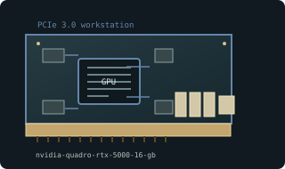

[ WORKSTATION GRAPHICS CARDS // IDENTIFIED COMPONENT ]
NVIDIA Quadro RTX 5000 16 GB
TU104 / Turing professional, 2018. This entry identifies one model or reference configuration; related products and OEM variants are distinguished below.

MODEL / VARIANT: Turing Quadro RTX 5000 is distinct from Fermi Quadro 5000 and later RTX 5000 Ada. ECC and certified software support are driver/configuration-specific.
Recorded specifications
| Cataloged product | NVIDIA Quadro RTX 5000 16 GB |
|---|---|
| Generation / core | TU104 / Turing professional, 2018 |
| Core & memory | TU104; 3072 CUDA cores; 16 GB GDDR6 with ECC capability; 256-bit memory interface; 265 W maximum board power. |
| Host interface & I/O | PCI Express 3.0 x16; one 8-pin auxiliary input; three DisplayPort 1.4 and VirtualLink USB-C on reference card. |
| Variant boundary | Turing Quadro RTX 5000 is distinct from Fermi Quadro 5000 and later RTX 5000 Ada. ECC and certified software support are driver/configuration-specific. |
| Archival identification | Record full part number, PCB or module revision, BIOS/firmware, device/subsystem IDs, driver version, adapters, physical condition and source-document edition. |
Compatibility, service & archival notes
Reference Quadro RTX 5000 uses Turing and 16 GB; not GeForce RTX 2080 SUPER despite related silicon family.
Check 8-pin lead, blower, USB-C/DP panel and chassis airflow. Record ECC state, firmware and professional driver branch; distinguish board from mobile RTX 5000.
- Check signaling, slot keying, lane width, power pinout, board/module dimensions, case clearance, airflow and PSU requirements for the exact specimen.
- Use drivers supporting its device ID and target OS. Preserve original installer and firmware copies, and record their versions before changes.
- Do not energize boards with corrosion, cracks, damaged connectors, obstructed cooling or suspected shorts; document condition before bench testing.
Manufacturer, model & standards sources
- Quadro RTX professional family model contextModel/product-history reference; compare the exact card revision and nameplate.
- NVIDIA product/legacy driver documentationManufacturer or archived product/driver documentation; exact OEM board details may differ.
- PCI Express interface standardHost interface reference; confirm exact physical and electrical compatibility.
Reference specifications do not supersede the board vendor's manual or nameplate. Performance figures are vendor claims unless explicitly identified as measured.